Operating Documentation
Direction 5193574-800, Rev# 22
LightSpeed 7.X Service Methods
Module Version 3.0, Version Date 11/21/08
Operating Documentation |
| Last Revised: | 10 September 2008 |
This document is intended to provide troubleshooting techniques required to diagnose the HOST (8000, 8200, or 8400) sub-assembly.
A Host Only software load is possible. In a stand-alone setup, the monitor, keyboard, and mouse are directly connected to the Host. Follow the LFC procedure exactly for the OS and Host Apps portions of the procedure.
You need to enter the ssh command and perform a reconfig. You also may need to perform the Setdate, System State, FlashDownload, and Options Install.
After the Host Load, verify the VDARC is running the same version of software as the Host Computer.
View the var/log for error messages.
Verify that the HP BIOS revision and setup is correct.
Verify that the Host Computer powers on automatically when the Operator Console front switch is set to ON. Failure to power on automatically results in checking the Host BIOS settings.
| NOTE: | <Ctrl+Alt+Delete> is NOT a valid command to restart the console. |
After the Operator Console front panel power switch is turned off, wait a minimum of 20 seconds before power is re-applied or the Host Computer may not power on properly.
Routinely save System State and reloaded it.
| ||||
| If your HOST is shutting down for no apparent reason, reboot the Host. If the Host still fails, then troubleshoot with only the monitor, keyboard, mouse, and power connected to the HOST. | ||||
| ifconfig | Confirms RUNNING ports from bootup only & address | |
| [root@ hostname ] check_config | Lists Product and SW Version, shows decimal equivalent of hosted, Gantry and Tube type | |
| [root@host] reconfig | To view or change information | |
| [root@host] dmidecode | more | To view HOST BIOS information | |
| cat /proc/driver/nvidia/cards/* | To view HOST NVIDIA Card type and BIOS information | |
| scsistat | Lists device information | |
| cat /proc/scsi/scsi | Lists SCSI devices attached to the system | |
| showprods | grep Helios_OC_Product | SW Version | |
| rpm -q -a | grep Helios | SW Version | |
| usr/g/bin/swhwinfo -all | SW and HW Info | |
| cat /GE (then hit <Tab> and <Enter>) | Lists OS build and date information | |
| cat /usr/g/config/INFO | Lists various system information from LFC | |
| slay -f att | Slays the Attention Box if stuck | |
| [root@host] /etc/rc.d/init.d/cliservice service cliservice start | Manually restarts the dpcproxy. If it is already running, it displays “dpcproxy server running” message. This is required to perform the telnet process successfully. | |
telnet localhost 623 Server: darc Username: <Enter> Password: <Enter> Login successful dpccli> exit | Performed as ctuser or root from the host. Verifies dpcproxy server running / SOL connection to VDARC (ethernet cable connection is good!). You may need to start the dpcproxy server manually! | |
telnet localhost 623 Server: darc Username: <Enter> Password: <Enter> Login successful dpccli> console | Performed as ctuser or root from the host. Verifies dpcproxy server running / SOL connection. You may need to start the dpcproxy server manually! Lists the VDARC Node information and current OS and kerel information. Used when the T/S ‘monitor’ cable is not available. Must check this when you can’t load the DARC Node. | |
telnet localhost 623 Server: darc Username: <Enter> Password: <Enter> Login successful dpccli> reset ok dpccli> console | Performed as ctuser or root from the host. Verifies dpcproxy server running / SOL connection You may need to start the dpcproxy server manually! Lists the VDARC Node information and current OS and kerel information. Used when the T/S ‘monitor’ cable is not available. Must check this when you can’t load the DARC Node. | |
| [root@host] ethtool -p eth# | LED on NIC (Network Interface Card) blinks for that ethernet port. Ctrl+C to stop. | |
| RECON_STOP | Stops all the recon processes | |
| ./cleanq (or cleanq) | Removes all the image queue entries | |
| RECON_START | Starts all the recon processes | |
| cleanMon | Shuts down Application software ONLY | |
cd /etc more hosts | Lists addresses that can be pinged | |
| uname -a | Displays kernel name, hostname, kernel release and version, machine hardware name, hardware platform | |
| hinv | Displays processors, memory…(sometimes must use lhinv). | |
| free -m | Displays how much memory is present in Megabytes / seen (sometimes 2GB for old xw8000 hosts) usually 4GB. Can use hinv on the Host or sometimes lhinv. | |
| vi /var/log/messages | Provides useful system messages/errors. Always view or send this log when HOST has issues. | |
| cat /proc/meminfo | Displays detailed memory information | |
| df -h | Displays partition information | |
| sfdisk -l | Displays partition information | |
| cat /proc/devices | Lists all devices detected by the system | |
cd /var/log more messages | Provides useful system messages/errors Always view or send this log when HOST has issues. | |
| tail -f /var/log/messages | Monitors the system log in real time | |
| service network | START/STOP/Restart the network | |
| cat /etc/sysconfig/network-scripts/ifcfg-eth0 | List network settings such as IP, netmask and gateway | |
| esnap scan_mgr | Dumps fwmgr, scanmgr, scanfilemgr, dataacq, sdiomgr timers files, good for debugging scan related issues. | |
ctuser@ hostname} vlog -p dataacq ctuser@ hostname} cd /usr/g/service.logctuser@ hostname} less dataacq.stout.log ctuser@hostname} less dataacq.sterr.log[root@darc] ps -ef | grep -v grep | grep dataacq | Look for dataaacq failures shown-then q to quit. Some data acq issues could be traced to DARC Memory so always verify proper memory seen via the lhinv command on the DARC. The DARC command verifies if dataacq is up on the VDARC-it may not be even though the pwho on the HOST shows it is up. | |
[root@host] cd /usr/g/service/menus [root@host] ls -lgtr *test*.log | In some software shows the Console Diags test.log files from /usr/g/service/menus. | |
| CRxHastLogResume | Creates a directory in OC:/usr/hast/resume and gathers part of timers logfiles, gesyslog and other information. |
Within this document are the following commands for the HOST sub-system of the Operator Console. Some real outputs have been copied off the VCT Console and erroneous inputs may be listed to allow the user to avoid mistakes that may occur when manually entering streams of commands during a troubleshooting process. Note that many commands require root.
The ifconfig command as run on the xw8xxx Host Computer from ctuser verifies if there is any type of active connection-but not necessarily the correct active connection. You also can check for active connections using the ping process. Look for running. Disconnect the connection to verify it is the correct connection. Do the ifconfig command to make sure it is not Running. Reconnect the cable. Remember that ‘running’ is a moment in time and does not mean the connection is still active for the next moment in time. There could be an intermittent issue, or the connector is not fully clicked in place.
| NOTE: | The DARC Subnet may have been changed from 172 to 169 base if there was a Hospital Network conflict. |
Example
Open a Unix Shell as ctuser and type {ctuser@ hostname } ifconfig
Eth0 is the HOST to DARC connection - port “C” (could be 169 subnet if Site IP is 172.16.0.x)
eth0 Link encap:Ethernet HWaddr 00:04:23:AD:B1:36
PortC inet addr:172.16.0.1 Bcast:172.16.0.255 Mask:255.255.255.0
inet6 addr: fe80::204:23ff:fead:b136/64 Scope:Link
UP BROADCAST RUNNING MULTICAST MTU:1500 Metric:1
RX packets:633021 errors:0 dropped:0 overruns:0 frame:0
TX packets:415771 errors:0 dropped:0 overruns:0 carrier:0
collisions:0 txqueuelen:1000
RX bytes:467396451 (445.7 Mb) TX bytes:37262665 (35.5 Mb)
Base address:0x6000 Memory:dbf80000-dbfa0000
Eth1 is the Gantry TGP connection - port “D”
eth1 Link encap:Ethernet HWaddr 00:04:23:AD:B1:37
PortD inet addr:192.9.220.1 Bcast:192.9.220.255 Mask:255.255.255.0
inet6 addr: fe80::204:23ff:fead:b137/64 Scope:Link
UP BROADCAST RUNNING MULTICAST MTU:1500 Metric:1
RX packets:150523 errors:0 dropped:0 overruns:0 frame:0
TX packets:151295 errors:0 dropped:0 overruns:0 carrier:0
collisions:2905 txqueuelen:1000
RX bytes:20372243 (19.4 Mb) TX bytes:19661489 (18.7 Mb)
Base address:0x6040 Memory:dbfa0000-dbfc0000
Eth2 is the Hospital backbone- port “A” (cannot be 172.16.0.x unless DARC is changed)
eth2 Link encap:Ethernet HWaddr 00:04:23:AD:A8:46
PortA inet addr:3.57.255.56 Bcast:3.57.255.255 Mask:255.255.252.0
inet6 addr: fe80::204:23ff:fead:a846/64 Scope:Link
UP BROADCAST RUNNING MULTICAST MTU:1500 Metric:1
RX packets:405810 errors:0 dropped:0 overruns:0 frame:0
TX packets:132895 errors:0 dropped:0 overruns:0 carrier:0
collisions:0 txqueuelen:1000
RX bytes:75616972 (72.1 Mb) TX bytes:132493964 (126.3 Mb)
Base address:0x4000 Memory:db180000-db1a0000
Eth3 is the Gantry STC connection - port “B”
eth3 Link encap:Ethernet HWaddr 00:07:E9:0D:06:DD
HOST inet addr:192.9.220.1 Bcast:192.9.220.255 Mask:255.255.255.0
PortB UP BROADCAST RUNNING MULTICAST MTU:1500 Metric:1
STC RX packets:6047 errors:0 dropped:0 overruns:0 frame:0
TX packets:6022 errors:0 dropped:0 overruns:0 carrier:0
collisions:10 txqueuelen:100
RX bytes:801454 (782.6 Kb) TX bytes:846248 (826.4 Kb)
Interrupt:25 Base address:0x28c0 Memory:da1a0000-0
Eth4 AW/Host Main Connection - orange on Host rear
eth4 Link encap:Ethernet HWaddr 00:11:85:AE:36:CE
inet addr:10.44.22.20 Bcast:10.44.22.255 Mask:255.255.255.0
inet6 addr: fe80::211:85ff:feae:36ce/64 Scope:Link
UP BROADCAST RUNNING MULTICAST MTU:1500 Metric:1
RX packets:0 errors:0 dropped:0 overruns:0 frame:0
TX packets:9 errors:0 dropped:0 overruns:0 carrier:0
collisions:0 txqueuelen:1000
RX bytes:0 (0.0 b) TX bytes:654 (654.0 b)
Base address:0x3000 Memory:d8100000-d8120000
Under Unix/Linux this is the local device that is the local system (Software pseudo device)
lo Link encap:Local Loopback
inet addr:127.0.0.1 Mask:255.0.0.0
inet6 addr: ::1/128 Scope:Host
UP LOOPBACK RUNNING MTU:16436 Metric:1
RX packets:218042 errors:0 dropped:0 overruns:0 frame:0
TX packets:218042 errors:0 dropped:0 overruns:0 carrier:0
collisions:0 txqueuelen:0
RX bytes:28403818 (27.0 Mb) TX bytes:28403818 (27.0 Mb)
Table 1 shows the Host Computer Ethernet NIC Port Labeling/Connection for ALL VCT SITES. The Ethernet naming assignments differ between the xw8000 and xw8200/xw8400, but cable connections remain the same.
Table 1: HP xw8000 or xw8200/xw8400 Computer (as viewed from REAR with cover off)
| Port Labeled A: Ethernet Cable connection to Console Bulkhead Hospital Backbone | Port Labeled C: Ethernet Cable connection up to DARC |
| Port Labeled B: Ethernet Cable connection to Console Bulkhead TBL (or maybe STC) | Port Labeled D: Ethernet Cable connection to Console Bulkhead TGP GANTRY |
Table 2 shows the Host Computer Ethernet naming Scheme for HOST Types.
Table 2: Host Computer Ethernet Naming Scheme for HOST Types
| Host Computer Port Label | xw8000 | xw8200/xw8400 | |
| Physical Port | Name | Name | |
| A - Hospital Backbone | eth0 (host id) | eth2 | |
| B - TBL (or older - STC) | eth1 | eth3 | |
| C - VDARC Node | eth2 | eth0 (host id) | |
| D - Gantry | eth3 | eth1 |
| NOTE: | Software versions correct for the internal xw8200/xw8400 NIC Host ID change via a naming reassignment as shown above. |
You may use the ethtool command on the HOST, VDARC, and VIG Nodes to verify that the NIC is active. If the Connection (NIC or Cabling) is lost, the command is active until repower, or until the connection is good and the <Control+C> command is properly invoked and seen by the subsystem.
| [root@] ethtool -p eth# | LED on NIC (Network Interface Card) blinks for that ethernet
port. Ctrl-C to stop. If the cable connection is lost, then Control+C will not stop the blinking until a good connection is made or power is cycled. |
(For GOC3/4/5 LightSpeed Operator Consoles) HP HOST Computers (xw8000, xw8200, and xw8400) may have the incorrect BIOS Version loaded at sites. Additionally, Host Computers from GPO may be shipped with the incorrect BIOS. When the incorrect BIOS version (old version: 1.05 or 1.07) is installed on the HOST, the most common failure mode is an extremely slow OS software load. The load time for the OS should take a maximum of 20 minutes or as stated in the LFC procedure.
Open a Unix Shell and become root (su - then password).
Verify the output version of the following command: dmidecode | more
xw8000 BIOS Information:
Vendor: Phoenix Technologies Ltd.
Version: JQ.W1.13US (Note: This is the 1.13 BIOS.)
xw8200 BIOS Information
Vendor: Hewlett-Packard
Version: 786B8 v2.10 (Note: This is the 2.10 BIOS.)
xw8400 BIOS Informatio
Vendor: Hewlett-packard
Version: 786D5 v2.24 (Note: This is the 2.24 BIOS.)
| NOTE: | All BIOS Versions (the 1.13, 2.10, and 2.24) are available via Coakley. |
Load the BIOS.
Manually verify the BIOS settings.
Image recon may fail and/or shutdown. Select Recon Management, select Pause queue, Restart queue. If this does not restart recon, then you may need a halt and power off/on of the console.
| NOTE: | You must rsh the darc and be root in usr/g/bin to perform this command. |
{ctuser@hostname} rsh darc
Last login: Tue Nov 16 10:16:14 from oc
[ctuser@darc]$ su -
Password: <password>
[root@darc ~]# cd /usr/g/bin
[root@darc bin]# ls
cleanq get_recon_files print_timers sdiomgr start_sdda
cupMonitor GRE_SOURCE ptimers showprods testHighSpeed
cupShutdown GRE_START rawvalid slay timecore-lnx
dataacq GRE_STOP read_isr slay_recon_processes what
data_restore image_buffer recon_control socketusers write-bench
DipDiag image_generation recon_dump_timers ssClient
doRhard.ex inject_recon_errors RotateResumeData start_darc_proc
[root@darc bin]# cleanq
cleanq: Command not found.
[root@darc bin]# ./cleanq
WARNING: This deletes all image queue files for images that have not been installed yet. If you continue, these files are not recoverable.
Do you wish to continue? [y/n]: y deleting 0 files in /usr/g/queue/priority0_jobs deleting 0 files in /usr/g/queue/priority1_jobs deleting 0 files in /usr/g/queue/priority2_jobs deleting 0 files in /usr/g/queue/priority3_jobs deleting 0 files in /usr/g/queue/priority4_jobs deleting 0 files in /usr/g/queue/prospective deleted 0 files total [root@darc bin]#
This check displays your current type of NVIDIA Card in the HOST and its BIOS. Your output may be different.
{ctuser@hostname} cat /proc/driver/nvidia/cards/*
Model: Quadro FX 1400
IRQ: 16
Video BIOS: 05.41.02.43.03 <-- RoHS Graphic Card
Card Type: PCI
{ctuser@hostname} hinv (8000 OUTPUT SHOWN - NOT 8200/8400)
CPU: GenuineIntel Intel(R) Xeon(TM) CPU 2.66GHz
4 2658 MHz i686 Processors
Secondary cache: 512 KB
FPU: GenuineIntel Intel(R) Xeon(TM) CPU 2.66GHz Floating Point
Main memory size: 4096 Mbytes Standard Memory Size
SCSI controller 1: Version aic7xxx
SCSI controller 0: Version aic7xxx
Disk drive: unit 03 on SCSI controller 0, Lun 00 SCSI Tower Sony MOD Drive
Disk drive: unit 04 on SCSI controller 0, Lun 00 SCSI Tower DVD-RAM Drive
IDE controller 1: PCI
CDROM: unit c on IDE controller 1 Host Computer Internal Drive
Graphics board: VGA
Ethernet interface configured: eth0 Hospital BackBone Port A
Ethernet interface configured: eth1 TBL/STC Port B
Ethernet interface configured: eth2 HOST - DARC Port C
Ethernet interface configured: eth3 Gantry TGP Port D
Ethernet interface configured: eth4 AW/Host Main Connection port 8 Gbe Switch
[root@hostname]# hinv (8200/8400 OUTPUT SHOWN - NOT 8000) CPU: GenuineIntel Intel(R) Xeon(TM) CPU 3.20GHz 4 3202 MHz i686 Processors Secondary cache: 1024 KB FPU: GenuineIntel Intel(R) Xeon(TM) CPU 3.20GHz Floating Point Main memory size: 4096 Mbytes Standard Memory Size SCSI controller 3: Version aic7xxx SCSI controller 2: Version aic7xxx Disk drive: unit 03 on SCSI controller 2, Lun 00 SCSI Tower Sony MOD Drive Disk drive: unit 04 on SCSI controller 2, Lun 00 SCSI Tower DVD-RAM Drive IDE controller 1: PCI CDROM Device: unit c on IDE controller 1 Host DVD Internal Drive 16550A UART serial port: 000003F8 Graphics board: VGA Ethernet interface configured: eth0 HOST - DARC Port C Ethernet interface configured: eth1 Gantry TGP Port D Ethernet interface configured: eth2 Hospital BackBone Port A Ethernet interface configured: eth3 TBL/STC Port B Ethernet interface configured: eth4 AW/Host Main Connection port 8 Gbe Switch Dual Channel Display
[root@hostname]# free -m (use hinv for Main Memory Stick info)
total used free shared buffers cached
Mem: 4052 361 3691 0 24 223
-/+ buffers/cache: 113 3938
Swap: 7930 0 7930
[root@ hostname] or ctuser: free
total used free shared buffers cached
Mem: 3888228 1839660 2048568 0 81112 425888
-/+ buffers/cache: 1332660 2555568
Swap: 8120724 0 8120724
[root@hostname]# cat /usr/g/config/recon_hardware.cfg
Overview: This command displays the number of IG Nodes present on the system and the type of Recon Hardware.
# The type of recon hardware that is installed on this
# console.
# Valid values: "Pegasus" or "GRE"
# type = string.
reconHardware = GRE
# Number of IG nodes
num_ig_node = 3
[root@hostname]# grep gantryType /usr/g/config/scanhardware.cfg
gantryType = GANTRY_VCT_40
[root@hostname]# cat /proc/cpuinfo | grep processor processor : 0 processor : 1 processor : 2 processor : 3
{ctuser@hostname} grep MH /proc/cpuinfo
xw8400:
cpu MHz : 1995.004
cpu MHz : 1995.004
cpu MHz : 1995.004
cpu MHz : 1995.004
xw8200:
cpu MHz : 3202.157
cpu MHz : 3202.157
cpu MHz : 3202.157
cpu MHz : 3202.157
xw8000:
cpu MHz : 2658.406
cpu MHz : 2658.406
cpu MHz : 2658.406
cpu MHz : 2658.406
There are two listings for SCSISTAT as there are several ALTERNATE drives available in product. Every alternate SCSI Device is not listed here.
The examples below are for a CT system. A PET system, has:
4 direct-access devices
1 optical device
2 CD-ROMs
[root@hostname]# cat /proc/scsi/scsi
Attached devices:
Host: scsi0 Channel: 00 Id: 00 Lun: 00
Vendor: FUJITSU Model: MAU3073NP Rev: HPF4
Type: Direct-Access ANSI SCSI revision: 03
Host: scsi1 Channel: 00 Id: 01 Lun: 00
Vendor: FUJITSU Model: MAU3073NP Rev: HPF4
Type: Direct-Access ANSI SCSI revision: 03
Host: scsi1 Channel: 00 Id: 02 Lun: 00
Vendor: FUJITSU Model: MAU3073NP Rev: HPF4
Type: Direct-Access ANSI SCSI revision: 03
Host: scsi2 Channel: 00 Id: 03 Lun: 00
Vendor: SONY Model: SMO-F551-SD Rev: 1.04
Type: Optical Device ANSI SCSI revision: 02
Host: scsi2 Channel: 00 Id: 04 Lun: 00
Vendor: MATSHITA Model: DVD-RAM SW-9572 Rev: F100
Type: CD-ROM ANSI SCSI revision: 02
[root@hostname cat /proc/scsi/scsi
Attached devices:
Host: scsi0 Channel: 00 Id: 00 Lun: 00
Vendor: MAXTOR Model: ATLAS15K2_73WLS Rev: HPM1
Type: Direct-Access ANSI SCSI revision: 03
Host: scsi1 Channel: 00 Id: 01 Lun: 00
Vendor: FUJITSU Model: MAS3735NP Rev: HPF2
Type: Direct-Access ANSI SCSI revision: 03
Host: scsi1 Channel: 00 Id: 02 Lun: 00
Vendor: FUJITSU Model: MAS3735NP Rev: HPF2
Type: Direct-Access ANSI SCSI revision: 03
Host: scsi2 Channel: 00 Id: 03 Lun: 00
Vendor: SONY Model: SMO-F551-SD Rev: 1.04
Type: Optical Device ANSI SCSI revision: 02
Host: scsi2 Channel: 00 Id: 04 Lun: 00
Vendor: MATSHITA Model: DVD-RAM SW-9572 Rev: F100
Type: CD-ROM ANSI SCSI revision: 02
[root@hostname]# scsistat
Device 0 00 Direct-Access FUJITSU MAU3073NP FW Rev: HPF4 OS Drive
Device 1 01 Direct-Access FUJITSU MAU3073NP FW Rev: HPF4 Image Drive #1
Device 1 02 Direct-Access FUJITSU MAU3073NP FW Rev: HPF4 Image Drive #2
Device 2 03 Optical Device SONY SMO-F551-SD FW Rev: 1.04 MOD Drive
Device 2 04 CD-ROM MATSHITA DVD-RAM SW-9572 FW Rev: F100 DVD Drive
{ctuser@hostname}: scsistat (other Drives that could be listed)
Direct-Access SEAGATE ST373453LW FW Rev: 0006 OS Drive
Direct-Access SEAGATE ST373453LW FW Rev: HPS3 Image Drive #1
Direct-Access SEAGATE ST373453LW FW Rev: HPS3 Image Drive #2
[root@hostname]# scsistat
Device 0 00 Direct-Access MAXTOR ATLAS15K2_73WLS FW Rev: HPM1
Device 1 01 Direct-Access FUJITSU MAS3735NP FW Rev: HPF2
Device 1 02 Direct-Access FUJITSU MAS3735NP FW Rev: HPF2
Device 2 03 Optical Device SONY SMO-F551-SD FW Rev: 1.04
Device 2 04 CD-ROM MATSHITA DVD-RAM SW-9572 FW Rev: F100
List Software Version, Tube Type, Gantry Type, and Host information (hyperthreading enabled, speed, memory seen) using check_config. Use the other commands listed to display the OS or additional information. The main differences are HOST processor speed (xw8400 vs xw8200 vs xw8000).
[root@hostname]# check_config
Product: LightSpeed VCT
sw_version: vct_hp.53
sw_hw_string: vct_hp.53.V40_H_V64_G_GTL
machine_type: Intel
host_id: 665694518
tube_type: 16
gantry_type: GANTRY_VCT_40
No. of processors: 4
Processor speed: 3202
memory: 4096
[root@hostname]# check_config
Product: LightSpeed VCT
sw_version: merge_wf_rh9.55_vct
sw_hw_string: merge_wf_rh9.55_vct.V40_H_V64_G_GTL
machine_type: Intel
host_id: 40708776
tube_type: 16
gantry_type: GANTRY_VCT_40
No. of processors: 4
Processor speed: 2658
memory: 4096
[root@hostname]# cat /GE (then select Tab key, then Enter key on keyboard)
{ctuser@bay56}[7] cat /GEHC_cdrom_rev.4.3.16
Release: GEHC/CTT Linux 4.3.16
Built: Tue Jul 12 12:29:10 CDT 2005
{ctuser@@hostname} showprods | grep Helios_OC_Product
I Helios_OC_Product 01/13/2006 LightSpeed ver vct_hp rel vct_hp.53
{ctuser@@hostname} rpm -q -a | grep Helios
Helios_CLASSMOC_Product-vct_hp-53
Helios_GRE_OC_Product-vct_hp-53
Helios_H2_PEGASUS_CLASSC_Product-vct_hp-53
Helios_i18n_Product-vct_hp-53
Helios_H2_O2LESS_OC_Product-vct_hp-53
Helios_VCT_Product-vct_hp-53
Helios_CLASSC_Product-vct_hp-53
Helios_VCT_CLASSC_Product-vct_hp-53
Helios_H2_O2LESS_i18n_OC_Product-vct_hp-53
Helios_H2_O2LESS_CLASSC_Product-vct_hp-53
Helios_OC_Product-vct_hp-53
[root@hostname]# swhwinfo (or swhwinfo -all)
vct_hp.53.V40_H_V64_G_GTL
swhwinfo will have the following new switches available with the VCT M4 and PF 1.5 M3 software release:
-c or -classc = Outputs the Class C version, if installed, on the system.
-m or -classm = Outputs the Class M version, if installed, on the system.
-o or -os = Outputs the Operating System version installed on the system.
-da or -date = Outputs the date and time the software was installed on the system (LFC).
The help utility (available by -h or -help) has complete details about all the available switches.
[root@hostname]# uname -a
Linux bay56 2.6.7-2.2smp #1 SMP Mon Jul 11 16:48:43 CDT 2005 i686 i686 i386 GNU/Linux
When Application Software is shutdown or has not started, the Host Computer pwho command should return with NOT RUNNING. When Application Software is up and running properly, the processes should all be RUNNING. You can do this as ctuser or root.
{ctuser@hostname or root} pwho
Checking for running processes using init files in:
/usr/g/config
INITFILE PID OWNER STATE NAME
EKGBroker.init *** NOT RUNNING EKGBroker
IqsQueueMgr.init *** NOT RUNNING IqsQueueMgr
WLServer.init *** NOT RUNNING WLServer
accs.init *** NOT RUNNING accs
afQueueMgr.init *** NOT RUNNING afQueueMgr
awStart.init *** NOT RUNNING awStart
badchanmgr.init *** NOT RUNNING badchanmgr
ces.init *** NOT RUNNING ces
cupPrompt.init *** NOT RUNNING cupPrompt
data_restore.init *** NOT RUNNING data_restore
dataacq.init *** NOT RUNNING dataacq
dis_event_router.init *** NOT RUNNING dis_event_router
dms.init *** NOT RUNNING dms
event_router.init *** NOT RUNNING event_router
examRxDisplayMgr.init *** NOT RUNNING examRxDisplayMgr
examRxEnv.init *** NOT RUNNING examRxEnv
fwmgr.init *** NOT RUNNING fwmgr
headermgr.init *** NOT RUNNING headermgr
image_buffer.init *** NOT RUNNING image_buffer
imagecreate.init *** NOT RUNNING imagecreate
msgView.init *** NOT RUNNING msgView
mtran.init *** NOT RUNNING mtran
piRxMgmt.init *** NOT RUNNING piRxMgmt
reconMgmt.init *** NOT RUNNING reconMgmt
reconSelftest.init *** NOT RUNNING reconSelftest
recon_control.init *** NOT RUNNING recon_control
resourceMgr.init *** NOT RUNNING resourceMgr
retroRecon.init *** NOT RUNNING retroRecon
rtsmgr.init *** NOT RUNNING rtsmgr
scanRx.init *** NOT RUNNING scanRx
scanfile_recvr.init *** NOT RUNNING scanfile_recvr
scanfile_xfer.init *** NOT RUNNING scanfile_xfer
scanfilemgr.init *** NOT RUNNING scanfilemgr
scanmgr.init *** NOT RUNNING scanmgr
sdiomgr.init *** NOT RUNNING sdiomgr
sdm.init *** NOT RUNNING sdm
sfm_archive.init *** NOT RUNNING sfm_archive
sidney.init *** NOT RUNNING sidney
start_sdda.init *** NOT RUNNING start_sdda
stcIf.init *** NOT RUNNING stcIf
uif_si.init *** NOT RUNNING uif_si
vavQueueMgr.init *** NOT RUNNING vavQueueMgr
visScript.init *** NOT RUNNING visScript
{ctuser@hostname or root} pwho
Checking for running processes using init files in:
/usr/g/config
INITFILE PID OWNER STATE NAME
EKGBroker.init 4139 ctuser S EKGBroker
IqsQueueMgr.init 4823 ctuser S IqsQueueMgr
WLServer.init 4745 ctuser S WLServer
accs.init 4832 ctuser S accs
afQueueMgr.init 4749 ctuser S afQueueMgr
awStart.init 4173 ctuser S awStart
badchanmgr.init 4848 ctuser S badchanmgr
ces.init 4174 ctuser S ces
cupPrompt.init 4137 ctuser S cupPrompt
data_restore.init 4850 ctuser S data_restore
dataacq.init 4671 ctuser S dataacq
dis_event_router.init 4136 ctuser S dis_event_route
dms.init 4758 ctuser S dms
event_router.init 4135 ctuser S event_router
examRxDisplayMgr.init 4748 ctuser S examRxDisplayMg
examRxEnv.init 4175 ctuser S examRxEnv
fwmgr.init 4141 root S fwmgr
headermgr.init 4831 root S headermgr
image_buffer.init 4675 ctuser S image_buffer
imagecreate.init 4144 ctuser S imagecreate
msgView.init 4140 ctuser S msgView
mtran.init 4176 ctuser S mtran
piRxMgmt.init 4824 ctuser S piRxMgmt
reconMgmt.init 4829 ctuser S reconMgmt
reconSelftest.init 4940 ctuser S reconSelftest
recon_control.init 4849 ctuser S recon_control
resourceMgr.init 4134 ctuser S resourceMgr
retroRecon.init 4830 ctuser S retroRecon
rtsmgr.init 4161 ctuser S rtsmgr
scanRx.init 4992 ctuser S scanRx
scanfile_recvr.init 4852 ctuser S scanfile_recvr
scanfile_xfer.init 4851 ctuser S scanfile_xfer
scanfilemgr.init 4747 root S scanfilemgr
scanmgr.init 4833 root S scanmgr
sdiomgr.init 4663 ctuser S sdiomgr
sdm.init 4255 ctuser S sdm
sfm_archive.init 4834 ctuser S sfm_archive
sidney.init 4143 ctuser S sidney
/usr/g/GEfirm/simStart.init 4162 ctuser S simStart
start_sdda.init 4145 ctuser S start_sdda
stcIf.init 4993 root S stcIf
uif_si.init 4142 ctuser S uif_si
vavQueueMgr.init 4746 ctuser S vavQueueMgr
visScript.init 4822 ctuser S visScript
The Telnet process from HOST to DARC is not successful without the dpcproxy server running. The first command listed below provides an output if the server is running. The second command is the restart command, which informs the user of the running or restarted status. Another great T/S tool is the ethtool: visit this info when T/S. Load the SOL CD into the DARC if telnet still fails and your DARC Subnet is not set to 169.
[root@hostname]# ps -leaf | grep -v grep | grep dpcproxy root 2580 1 0 Apr27 ? 00:00:00 /usr/local/cli/dpcproxy **************** the dpcproxy server displayed above is running. **************** [root@hostname]# service cliservice start ****************dpcproxy is shown as already running or retarted. **************** “The dpcproxy is running”
This command displays the addresses and all the names each address is known as.
{ctuser@hostname}: cd /etc
{ctuser@ hostname }: more hosts
# Do not remove the following line, or various programs
# that require network functionality will fail.
127.0.0.1 localhost.localdomain localhost
xx.xxx.xx.xx system name
192.9.220.1 Gantry information (example: ct56_oc CT56_oc0
CT56_OC0 oc OC CT56_sbcCT56_sbc0 CT56_SBC0 sbc SBC SBCdLAN)
172.16.0.2 darc ice ICE
192.9.220.12 ice-sm-gate
192.9.220.13 ice-post
192.9.220.14 ice-sigmab
192.9.220.1 sbcorig
192.9.224.2 OBCR obcr
192.9.224.201 ORP orp
192.9.220.2 TGP tgp STC stc
192.9.220.4 ETC etc
192.9.220.20 sarb
192.9.220.21 sarb-ice
[root@ hostname]# sfdisk -l Disk /dev/md0: 35840896 cylinders, 2 heads, 4 sectors/track sfdisk: ERROR: sector 0 does not have an msdos signature /dev/md0: unrecognized partition No partitions found Disk /dev/sda: 8924 cylinders, 255 heads, 63 sectors/track Units = cylinders of 8225280 bytes, blocks of 1024 bytes, counting from 0 Device Boot Start End #cyls #blocks Id System /dev/sda1 * 0+ 12 13- 104391 83 Linux /dev/sda2 13 534 522 4192965 83 Linux /dev/sda3 535 795 261 2096482+ 82 Linux swap /dev/sda4 796 8923 8128 65288160 5 Extended /dev/sda5 796+ 804 9- 72261 83 Linux /dev/sda6 805+ 1054 250- 2008093+ 82 Linux swap /dev/sda7 1055+ 1304 250- 2008093+ 82 Linux swap /dev/sda8 1305+ 1554 250- 2008093+ 82 Linux swap /dev/sda9 1555+ 2771 1217- 9775521 83 Linux /dev/sda10 2772+ 4231 1460- 11727418+ 83 Linux /dev/sda11 4232+ 8923 4692- 37688458+ 83 Linux Warning: start=63 - this looks like a partition rather than the entire disk. Using fdisk on it is probably meaningless. [Use the --force option if you really want this] [root@ hostname]# df -h Filesystem Size Used Avail Use% Mounted on /dev/sda2 4.0G 3.1G 958M 77% / /dev/sda1 99M 5.9M 88M 7% /boot none 2.0G 0 2.0G 0% /dev/shm /dev/sda9 9.4G 272K 9.4G 1% /usr/interchange /dev/sda10 12G 792K 12G 1% /data /dev/sda11 36G 8.0G 28G 23% /usr/g /dev/md0 137G 140M 137G 1% /usr/g/sdc_image_pool /dev/fd0 1.4M 21K 1.4M 2% /mnt/floppy
[root@ hostname]# service network
Usage: /etc/init.d/network {start|stop|restart|reload|status}
[root@ hostname]# cat /etc/sysconfig/network-scripts/ifcfg-eth0
DEVICE=eth0
ONBOOT=yes
BOOTPROTO=static
IPADDR=172.16.0.1
NETMASK=255.255.255.0
[root@ hostname]# cat /etc/sysconfig/network-scripts/ifcfg-eth2
DEVICE=eth2
ONBOOT=yes
BOOTPROTO=static
IPADDR=3.57.255.56
NETMASK=255.255.252.0
GATEWAY=3.57.252.254
[root@ hostname]# cat /etc/sysconfig/network
NETWORKING=yes
HOSTNAME=liblab10
GATEWAY=3.231.15.254
GATEWAYDEV=eth0
FORWARD_IPV4=yes
NISDOMAIN=CTSYSTEMS
USB devices-such as the Service Adaptor to Service Key, and the Trackball and their associated interconnect paths-must be recognized by the HOST during power-on boot-up for successful operation with Application software. After determining a failure, always perform a halt from root or Shutdown and then re-power the Operator Console to enable the USB device.
With Apps up or down you can plug a USB device into any port available on the front or rear of the Host Computer to determine if there is a bad:
Specific Host Port at rear of Operator Console
Trackball
Interconnect cable at rear of Operator Console
USB Feed-through for the Trackball at rear of Operator Console
USB Adaptor (for the Service Key located behind the Service Key Panel)
Interconnect cable from rear of Operator Console to USB Adaptor
Two Unix Shells are opened and the user is required to be root on the host for each. Two sets of commands are utilized to determine if a Host recognized the device and its path. The /var/log/messages act as a real-time output log to determine device status. Thelsusbcommand determines if the device information returned is healthy. During our initial test troubleshooting, we experienced an intermittent trackball with output from the lsusb command was present, but the information was incomplete at times, missing at times, and had dashes or question marks shown. Viewing the /var/log/messages may have assisted us at that time and thus it has been added here.
{ctuser@hostname} su - <Enter>
Password: <Enter>
[root@hostname]# lsusb -d0x----: -v (where ---- is the device)
[root@hostname]# tail -f /var/log/messages <Enter>
| NOTE: | <CtrlC> to get out of the log. The tail -f shows the user the latest information as it occurs. In this case, we are looking for the various USB ports to recognize a device when it is plugged in, and to recognize the device was removed when it is unplugged. Additionally, if the device is faulty intermittently, the user can wiggle the cable or device and in some cases watch the device come and go for no reason. It is acceptable to hit the <Space Bar> several times within the /var/log/messages shell for easier viewing while performing troubleshooting. |
Open a Unix Shell.
{ctuser@hostname} su -
Password:
[root@hostname]# lsusb -d0x5223: -v
iManufacturer 1 CST
iProduct 4 CST USB UNITRAC
Open a Unix Shell.
{ctuser@hostname} su -
Password:
[root@hostname]# tail -f /var/log/messages
Oct 14 00:02:56 pygmy kernel: usb 5-1: new low speed USB device using address 2
Oct 14 00:02:56 pygmy kernel: drivers/usb/input/hid-core.c: ctrl urb status -32 received
Oct 14 00:02:56 pygmy last message repeated 2 times
Oct 14 00:02:56 pygmy kernel: input: USB HID v1.00 Mouse [CST CST USB UNITRAC] on usb-0000:00:1d.3-1
[root@hostname]# tail -f /var/log/messages Oct 14 00:07:22 pygmy kernel: usb 5-1: USB disconnect, address 2 Oct 14 00:07:22 pygmy kernel: Device not ready. Make sure there is a disc in the drive. Oct 14 00:07:22 pygmy kernel: Device not ready. Make sure there is a disc in the drive. Oct 14 00:07:22 pygmy kernel: updfstab: Using deprecated /dev/sg mechanism instead of SG_IO on the actual device [root@hostname]# lsusb -d0x5223: -v ***** No output displayed *****
Open a Unix Shell.
{ctuser@hostname} su -
Password:
[root@hostname]# lsusb -d0x067b: -v
idVendor 0x067b Prolific Technology, Inc.
idProduct 0x2303 PL2303 Serial Port
[root@pygmy]# lsusb
Bus 005 Device 001: ID 0000:0000
Bus 004 Device 001: ID 0000:0000
Bus 003 Device 001: ID 0000:0000
Bus 002 Device 002: ID 067b:2303 Prolific Technology, Inc. PL2303 Serial Port
Bus 002 Device 001: ID 0000:0000
Bus 001 Device 001: ID 0000:0000
Open a Unix Shell.
{ctuser@hostname} su -
Password:
[root@hostname]# tail -f /var/log/messages
Oct 14 00:07:22 pygmy last message repeated 4 times
Oct 14 00:10:37 pygmy kernel: usb 2-1: new full speed USB device using address 2Oct 14 00:10:38 pygmy kernel: drivers/usb/serial/usb-serial.c: USB Serial support registered for Generic
Oct 14 00:10:38 pygmy kernel: usbcore: registered new driver usbserial_generic
Oct 14 00:10:38 pygmy kernel: usbcore: registered new driver usbserial
Oct 14 00:10:38 pygmy kernel: drivers/usb/serial/usb-serial.c: USB Serial Driver core v2.0
Oct 14 00:10:38 pygmy kernel: drivers/usb/serial/usb-serial.c: USB Serial support registered for PL-2303
Oct 14 00:10:38 pygmy kernel: pl2303 2-1:1.0: PL-2303 converter detected
Oct 14 00:10:38 pygmy kernel: usb 2-1: PL-2303 converter now attached to ttyUSB0Oct 14 00:10:38 pygmy kernel: usbcore: registered new driver pl2303
Oct 14 00:10:38 pygmy kernel: drivers/usb/serial/pl2303.c: Prolific PL2303 USB to serial adaptor driver v0.11
[root@hostname]# tail -f /var/log/messages Oct 14 00:14:26 pygmy kernel: usb 2-1: USB disconnect, address 2 Oct 14 00:14:26 pygmy kernel: PL-2303 ttyUSB0: PL-2303 converter now disconnected from ttyUSB0 Oct 14 00:14:26 pygmy kernel: pl2303 2-1:1.0: device disconnected Oct 14 00:14:26 pygmy kernel: Device not ready. Make sure there is a disc in the drive. Oct 14 00:14:26 pygmy kernel: Device not ready. Make sure there is a disc in the drive. Oct 14 00:14:26 pygmy kernel: updfstab: Using deprecated /dev/sg mechanism instead of SG_IO on the actual device [root@hostname]# lsusb -d0x067b: -v ***** No output displayed *****
Reboot your Console to check if the OS and two Image Disks are seen and come up without error. Screen shots are shown for VCT xw8000 and xw8200 HOST Types.
Currently, the xw8200/xw8400 Host with BIOS version 2.10 or later does not usually display automatically. In this case, at the HP Splash Screen, select any key to invoke the drive display. Once the Device Display is present, you can also use the <Pause/Break> key to freeze the window so you can really look it over.
At the most basic level, you are looking for all three drives and no errors coming up. This is the initial indicator that something is wrong with your Host. Examples are shown below for reference of good and failing screens. Current production drives are Seagate, Hewlett Packard, and Fujitsu.
| NOTE: | The PSPs for the HOST Computer (and associated internal components) changes over the course of time. The following table is provided as a snapshot of hardware acceptability as of January 2007. (See Table 3.) |
Table 3: January 2007 HOST/BIOS/Memory/Drive Specification
| GOC5 VCT Console 5115335 | 8000 NOTE:2368697-3 is upgraded to = 5115333 at the vendor | 5115333 FX1400 Graphics 4 Gbyte Memory BIOS 1.13 US: DY938UX#ABA/# | 1 HDD Chan 0: 2 HDD Chan 1: Note - Both Image HDD’s should be the same vendor model/part number 73GB Ultra320 15K RPM HDD Seagate ST373453LW HPS3 Alternates: Hewlett-Packard #333395-001 Fujitsu MAU3073NP HPF2/HPF4 Fujitsu MAX3073NP HPF1 (RoHS) |
| GOC5 VCT Console 5115335-2 | 8200 | 5117866-28 FX1400 Graphics 4 Gbyte Memory BIOS 2.10 US: PY655UC#ABA | 1 HDD Chan 0: 2 HDD Chan 1: Note - Both Image HDD’s should be the same vendor model/part number 73GB Ultra320 15K RPM HDD Seagate ST373453LW HPS3 Alternates: Fujitsu MAU3073NP HPF2/HPF4 Fujitsu MAX3073NP HPF1 (RoHS) |
| HBA | ID | LUN | VENDOR | PRODUCT | REV | SYNC | WIDE | CAPACITY |
| 0 | 0 | 0 | Fujitsu | MAU3073NN | HPF2 | 320 | 16 | 73412MB |
| 0 | 7 | 0 | LSILogic | LSI1030[402] | 1030800 | 320 | 16 | |
| 1 | 1 | 0 | Fujitsu | MAU3073NN | HPF2 | 320 | 16 | 73412MB |
| 1 | 2 | 0 | Fujitsu | MAU3073NN | HPF2 | 320 | 16 | 73412MB |
| 1 | 7 | 0 | LSILogic | LSI1030[402] | 1030800 | 320 | 16 |
| HBA | ID | LUN | VENDOR | PRODUCT | REV | SYNC | WIDE | CYL/HD/SEC |
| 0 | 0 | 0 | Seagate | ST373453LW | HPF3 | 80 | 16 | 1024/255/63 |
| 0 | 7 | 0 | LSILogic | LSI1030[102] | 103060 | 320 | 16 | |
| 1 | 1 | 0 | Seagate | ST373453LW | HPF3 | 80 | 16 | 1024/255/63 |
| 1 | 2 | 0 | Seagate | ST373453LW | HPF3 | 80 | 16 | 1024/255/63 |
| 1 | 7 | 0 | LSILogic | LSI1030[102] | 103060 | 320 | 16 |
Searching for device HBA1 ID1 LUN0
Device set to narrow
Searching for device HBA1 ID2 LUN0
Device set to narrow
| HBA | ID | LUN | VENDOR | PRODUCT | REV | SYNC | WIDE | CAPACITY |
| 0 | 0 | 0 | Fujitsu | MAU3073NN | HPF2 | 320 | 16 | 73412MB |
| 0 | 7 | 0 | LSILogic | LSI1030[402] | 1030800 | 320 | 16 | |
| 1 | 1 | 0 | Fujitsu | MAU3073NN | HPF2 | 40 | 8 | 73412MB |
| 1 | 2 | 0 | Fujitsu | MAU3073NN | HPF2 | 40 | 8 | 73412MB |
| 1 | 7 | 0 | LSILogic | LSI1030[402] | 1030800 | 320 | 16 |
Resolution:
Sync / Wide should have been 320.0 / 16 respectively for this “specific Host Type.” Issue shown was the result of “scuffing” found on the SCSI Ribbon cables from the Motherboard to the Drives. The ribbon cable was in contact with the HP Box ground plane. Swapping the cables may momentarily clear up the issue but will not resolve the issue.
Recommendation:
Replacement Host with LFC /Option Update (due to new NIC or due to a NIC swap) is recommended. Some FEs swap the NICs, but Engineering does not fully support this activity. NICs are not tested by the vendor.
Spinning up the device! HBA 1, ID 2 LUN 0 (See Illustration 1.)
Device not available at HBA 1, ID 2 LUN 0
| HBA | ID | LUN | VENDOR | PRODUCT | REV | SYNC | WIDE | CYL/HD/SEC |
| 0 | 0 | 0 | [NOT SHOWN HERE] | |||||
| 0 | 7 | 0 | LSILogic | LSI1030[102] | 103060 | 320 | 16 | |
| 1 | 1 | 0 | Seagate | ST373453LW | HPF3 | 80 | 16 | 73412MB |
| 1 | 2 | 0 | Seagate | ST373453LW | HPF3 | 73412MB | ||
| 1 | 7 | 0 | LSILogic | LSI1030[102] | 103060 | 320 | 16 |
Illustration 1: Spinning Up Device Screen
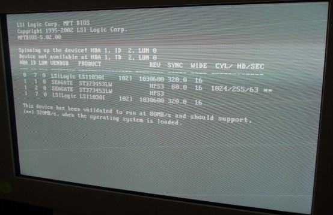
Recommendation:
Issue was the top Disk Drive “Image Drive #2” was defective and would not spin up. The OS Drive is not even listed. Additionally, please note that there is not a defect displayed for the missing OS Disk Drive. The OS Drive is missing due to: power loss / SCSI Connection issue / bad drive that fails to be recognized.
Illustration 2: OS Not Found Screen
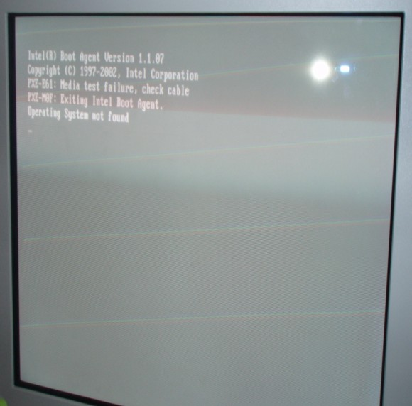
[root@hostname]# dd if=/dev/zero of=/usr/g/sdc_image_pool/test count=1024
This command lets you know if the First Image Disk is seen/present in the HOST and responding. It does not tell you whether the Image Disks or associated SCSI cable/motherboard are bad. You need to reboot and watch the Disk Drives after the HP Splash Screen to see the bad one.
Good Output:
1024+0 records in 1024+0 records out
Bad Output:
dd: opening `/usr/g/sdc_image_pool/test` Input/Output error
The procedure to load the 1.13 HP BIOS may be a little confusing. To turn into the load procedure, just add in the floppy insertion after Step 1.
Checking HP xw8000 Motherboard BIOS Settings with 4GB Memory
| NOTE: | HP xw8000 with 2GB of memory use the 1.05 BIOS value. |
Verify correct Setup values of BIOS 1.13 on the xw8000.
| NOTE: | If the HP BIOS is not at the correct BIOS Version, the OS load on the HP will take a very long time. |
Turn on the HP Host Computer.
During the initial HP Splash Screen, press <F2> to enter the Setup.
Select the following using the <arrow keys>, <Esc>, <Enter>, and <+/-> or as noted on the screen:
Main
BIOS Version: JQ.W1.13US (if 1.13 is not present load BIOS via floppy)
Installed O/S: [Other/NT/Linux]
Legacy USB Support: [Disabled]
Advanced
Processors: Hyper-Threading [Enabled]
AGP Slot (Graphics): Enable Master: [Enabled] Graphics Aperature: [128Mb]
PCI Slot 1 (32-bit): Option ROM Scan: [Disabled]
PCI Slot 2 (32-bit): Option ROM Scan: [Disabled]
PCI Slot 3 (PCI-X 133): Option ROM Scan: [Disabled]
PCI Slot 4 (PCI-X 100): Option ROM Scan: [Disabled]
PCI Slot 5 (PCI-X 100): Option ROM Scan: [Disabled]
Power
Remote Power-On: [Disabled]
After Power Failure: [Power On]
Boot
QuickBoot Mode: [Enabled]
Display OPROM Message: [Enabled]
Default Primary Video Adapter: [AGP]
Boot Device Priority
Legacy Floppy Drives
CD-ROM Drive
Hard Drives
- #28 ID00 LUN0 SEAGATE ST373453LW
- ! #29 ID01 LUN0 SEAGATE ST373453LW (perform Shift 1 sequence)
- ! #29 ID02 LUN0 SEAGATE ST373453LW (perform Shift 1 sequence)
- ! Bootable Add-In Cards (perform Shift 1 sequence)
- ! Network Boot (perform Shift 1 sequence)
- ! IBA 1.1.07 Slot 0518 (perform Shift 1 sequence)
- ! 39160 SCSI CD-ROM Drive (perform Shift 1 sequence)
| NOTE: | After the 1.13 load and change acceptance, we are no longer seeing the above line (item vii). It used to be when loaded, but seems to disappear. This is normal. |
Exit
Exit Saving Changes
Yes
| NOTE: | GEHC GSP/CTT - Recommended xw8200/xw8400 CT/MR BIOS settings - Revision 1.0 - 12/10/2004 |
Loading the HP BIOS sets up the LSI BIOS and the System default BIOS for the HP Host Computer. You need to manually set changes specified by GEHC “from default”. Two sections are discussed for the xw8200/xw8400 HP Host Computer (4 Gbyte Memory ONLY)
| NOTE: | HP default LSI BIOS settings are assumed. Only the GEHC xw8200/xw8400 CT/MR changes are shown. If your are unsure about the state of current settings, set the defaults first using the LSI Global Properties menu. |
Press <Ctrl+C> as prompted to check/set LSI SCSI BIOS settings.
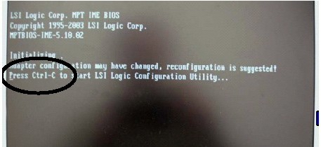
Use <F2> and arrow key on first screen to navigate to Global Properties, then press <Enter>.
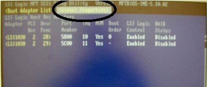
Disable LSI Integrated RAID feature, then press key to exit screen.
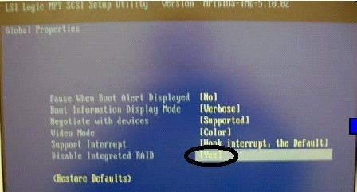
Select first SCSI channel, then press <Enter>.
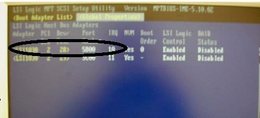
Press <Enter> to check/set device properties for LSI SCSI Channel 0.
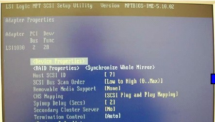
Use arrow/space keys to disable Scan IDs 8-15, then press <Esc> to exit screen.
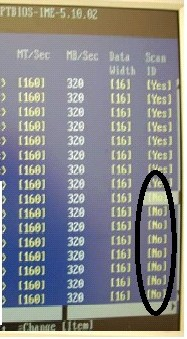
Select Save Changes, then press <Enter> to save settings.
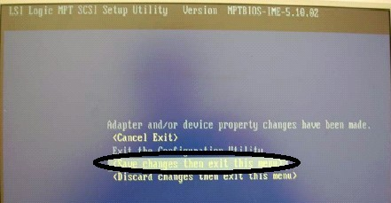
Select the second SCSI channel, then press <Enter>.
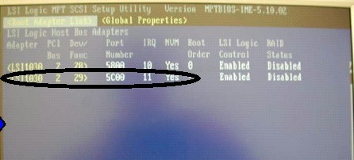
Press <Enter> to check/set device properties for LSI SCSI Channel 1.
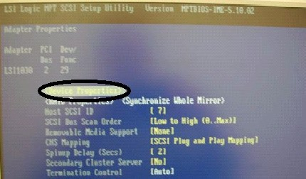
Use arrow/space keys to disable Scan IDs 8-15, then press <Esc> to exit screen.
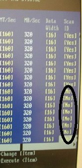
Highlight Save Changes, then press <Enter> to save settings.
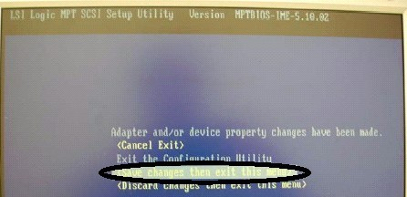
Press <Esc> to exit utility.
| NOTE: | HP default LSI BIOS settings are assumed. Only the GEHC xw8200 CT/MR changes are shown. If your are unsure about the state of current settings, set the defaults first using the Main BIOS menu. |
Put BIOS Version 2.10 Floppy into HP xw8200 with 4 Gbytes of Memory. Repower HP Host Computer and select <F10> to access the following screens.
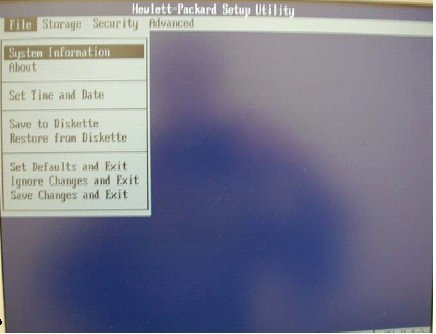
Disable Network Service Boot, then press <F10> to save settings.
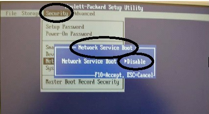
Enable power-on after power loss.
Disable S5 Wake on LAN, then press <F10> to save settings.
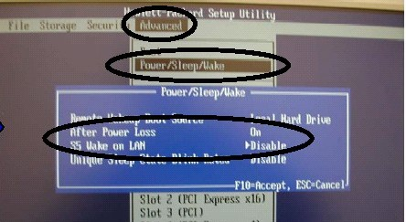
Enable Hyper Threading feature, then press <F10> to save settings.
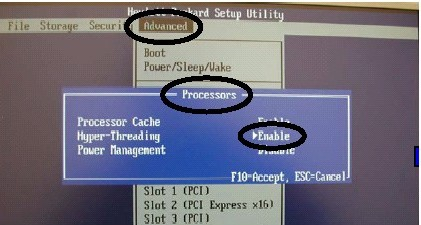
Disable Network Controller Option ROM, then press <F10> to save settings.
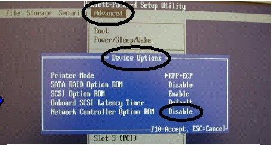
Disable PCI Slot 1 Option ROM, then press <F10> to save settings.
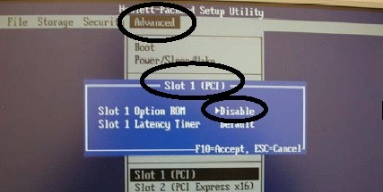
Disable PCI Slot 3 Option ROM, then press <F10> to save settings.
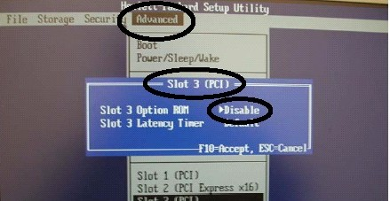
Disable PCI Slot 4 Option ROM, then press <F10> to save settings.
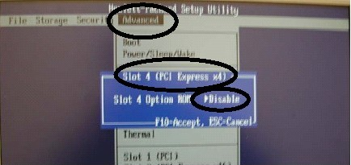
Disable PCI Slot 5 Option ROM, then press <F10> to save settings.
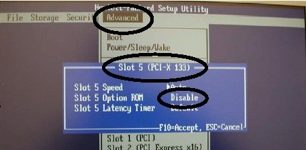
Disable PCI Slot 6 Option ROM, then press <F10> to save settings.
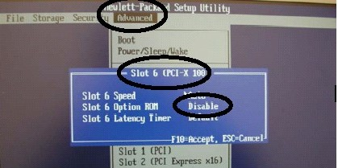
Disable PCI Slot 7 Option ROM, then press <F10> to save settings.
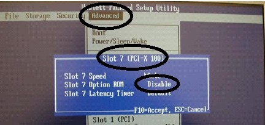
Save changes and exit.
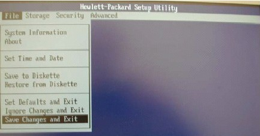
Press <F10> when prompted to save all setting changes made.
For the xw8200 Host Computer version ONLY, verify correct bios version and setup values of BIOS v02.10. This does not apply to the HP8000 Host Computer.
| NOTE: | The HP xw8200 BIOS version must be correct. Additionally, the settings shown below are equally important for proper functionality. |
Turn on the HP 8200 Host Computer.
| NOTE: | Verify that the BIOS Version is v02.10 located at the left-bottom of the Initialization Screen. |
Press any key at the HP Splash Screen to continue.
At the Initialization screen, press <Ctrl+C> to start the LSI Logic Configuration Utility.
On the LSI Logic SCSI Setup Utility Main Menu, select [F2] to highlight the Main Selections.
Press the right arrow key to highlight Global Properties, then press [Enter].
For Global Properties, navigate via the down-arrow key to [Disable Integrated Raid] and select the following per screen instructions:
Pause When Boot Alert Displayed [No]
Boot Information Display Mode [Verbose]
Negotiate with devices [Supported]
Video Mode [Color]
Support Interrupt [Hook interrupt, the Default]
Disable Integrated RAID [Yes]
(Restore Defaults)
Select <Esc>
With the Global Properties tab highlighted, use the arrow key if necessary to select the first SCSI Channel 0 (Boot Order 0), then press [Enter].
Press [Enter] at Device Properties.
Use the arrow/space keys to navigate to the following SCSI IDs 8 through 15. Then use the instructions per the screen at each Scan ID column setting to select [No] to disable the SCSI IDs.
SCSI ID 8 Scan ID [No]
SCSI ID 9 Scan ID [No]
SCSI ID 10 Scan ID [No]
SCSI ID 11 Scan ID [No]
SCSI ID 12 Scan ID [No]
SCSI ID 13 Scan ID [No]
SCSI ID 14 Scan ID [No]
SCSI ID 15 Scan ID [No]
Press the [Esc] to exit the Device Properties Setup screen.
Press the [Esc] to exit Device Properties.
Select Save Changes then exit this menu, then press [Enter] to save settings.
At the highlighted Global Properties tab, use the arrow key if necessary to select the first SCSI Channel 1 (Boot Order 1), then press [Enter].
Press [Enter] at Device Properties.
Use the arrow/space keys to navigate to SCSI IDs 8 through 15. Then use the instructions per the screen at each Scan ID column setting to select [No] to disable the SCSI IDs.
SCSI ID 8 Scan ID [No]
SCSI ID 9 Scan ID [No]
SCSI ID 10 Scan ID [No]
SCSI ID 11 Scan ID [No]
SCSI ID 12 Scan ID [No]
SCSI ID 13 Scan ID [No]
SCSI ID 14 Scan ID [No]
SCSI ID 15 Scan ID [No]
Press the [Esc] to exit the Device Properties Setup screen.
Press the [Esc] to exit Device Properties.
Select Save Changes then exit this menu, then press [Enter] to save settings.
Select [Esc] to exit the Configuration Utility screen.
For English (or the language you prefer), press [Enter].
Use the arrow keys to navigate to the Security selection.
Use the arrow keys to navigate to the selection, then press [Enter] to toggle to the proper setting.
Navigate to Network Service Boot, then select Disable.
Press <F10> to save setting.
Use the arrow keys to navigate to the selection, then press [Enter] to toggle to the proper setting.
After Power Loss, select [On].
Navigate to S5 Wake on LAN, then select Disable.
Press <F10> to save setting.
Use the arrow keys to navigate to the selection, then press [Enter] to toggle to the proper setting.
Navigate to Hyper-Threading, then select Enable.
Press <F10> to save setting.
Use the arrow keys to navigate to the selection, then press [Enter] to toggle to the proper setting.
Navigate to Network Controller option ROM, then select Disable.
Press <F10> to save the setting.
Use the arrow keys to navigate to the selection, then press [Enter] to toggle to the proper setting.
Navigate to Slot 1 Option ROM, then select Disable.
Press <F10> to save setting.
Use the arrow keys to navigate to the selection, then press [Enter] to toggle to the proper setting.
Navigate to Slot 3 Option ROM, then select Disable.
Press <F10> to save setting.
Use the arrow keys to navigate to the selection, then press [Enter] to toggle to the proper setting.
Navigate to Slot 4 Option ROM, then select Disable.
Press <F10> to save setting.
Use the arrow keys to navigate to the selection, then press [Enter] to toggle to the proper setting.
Navigate to Slot 5 Option ROM, then select Disable.
Press <F10> to save setting.
Use the arrow keys to navigate to the selection, then press [Enter] to toggle to the proper setting.
Navigate to Slot 6 Option ROM, then select Disable.
Press <F10> to save setting.
Use the arrow keys to navigate to the selection, then press [Enter] to toggle to the proper setting.
Navigate to Slot 7 Option ROM, then select Disable.
Press <F10> to save setting.
Use the arrow keys to navigate to the File selection, then press [Enter] to select Save Changes and Exit.
At the prompt Are you sure you want to save changes and exit? F10=Yes, Esc=No, press <F10>.